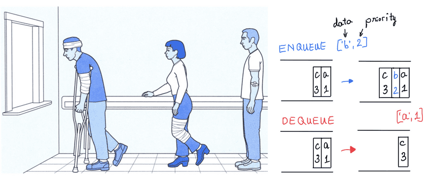

Hospital Priority Queue Simulator
A Java-based program that simulates a hospital's patient management system using a priority queue implemented with binary heaps.

Tools and Technologies Used:
- Programming Language: Java
- Development Environment: IntelliJ IDEA
- Data Structure: Binary Heap
- Version Control: Git/GitHub
Key Concepts:
- Priority Queue Implementation: Developed a custom priority queue system to manage patient priorities efficiently.
- Binary Heap Structure: Utilized binary heaps to optimize queue operations, ensuring O(log n) time complexity for insertions and removals.
- Object-Oriented Programming: Applied OOP principles to create a flexible and extensible system design.
- Healthcare Process Simulation: Modeled real-world hospital patient management scenarios for practical application.
Achievements:
- Efficient Algorithm Implementation: Successfully implemented a binary heap-based priority queue from scratch, demonstrating proficiency in advanced data structures.
- Performance Optimization: Achieved O(log n) time complexity for critical operations, ensuring efficient handling of large patient volumes.
- Realistic Simulation: Created a practical simulation of hospital patient management, bridging theoretical concepts with real-world applications.
Lessons Learned:
- Advanced Data Structures Application: Deepened understanding of how complex data structures can be applied to solve real-world problems efficiently.
- Java Programming Proficiency: Enhanced Java programming skills and familiarity with the IntelliJ IDEA development environment.
- Algorithm Design and Optimization: Improved problem-solving abilities through the process of designing and optimizing algorithms for specific use cases.